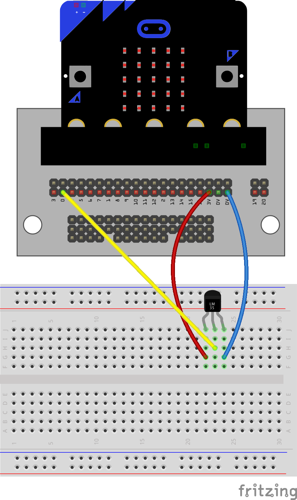

Microbit les 1b¶
Doel
Continu uitlezen van een analoge temperatuursensor en grafisch weergeven van de temperatuur.
Voorkennis
Les 01a-Temperatuur plotten
Concepten
analoge temperatuursensor
Wat heb je nodig?
microbit; “host” computer met Mu-editor breadboard; analoge temperatuursensor
Schakeling
sluit microbit-3V aan op Vcc van de sensor
sluit microbit-0V aan op Gnd van de sensor
sluit pin0 van de microbit aan op Out van de sensor
Zie breadboard-schakeling en schema verderop.
LM35DZ pinout

Analoge input
pin0.read_analog()resultaat: 0..1023
0V=>0, 3.3V=>1023
3.3V == 3300 mV
Karakteristieken LM35DZ
temperatuur bereik 0-100 ‘C
nauwkeurigheid +/- 0.25 ‘C
0 ‘C => 0V
10 mV per 0.1 ‘C
Python programma
from microbit import *
while True:
temp1 = temperature()
temp2 = pin0.read_analog()
print((temp1, temp2))
sleep(100)
Nog aanpassen!
Het programma hiernaast in nog niet juist!
Voor het bepalen van temp2 moet je rekening houden met:
het spanningsbereik van de sensor, afhankelijk van de temperatuur;
het bereik van de A/D-omzetter van de microbit.
breadboard-schakeling |
schema |
|---|---|
|  | 
|
{kind=link}